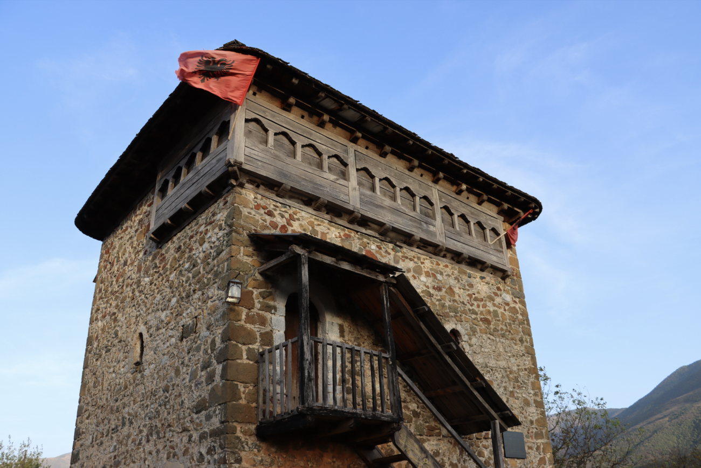

What to visit in Tropoja

Discover the breathtaking beauty of Valbona Valley nestled in the heart of Tropoja, Albania. Immerse yourself in a pristine natural wonderland where towering peaks, crystal-clear rivers, and lush forests await. Trek through picturesque landscapes, encounter traditional mountain villages, and experience the warm hospitality of the locals. Whether you seek adventure or serenity, Valbona Valley offers an unforgettable escape into the unspoiled beauty of the Albanian Alps. Embark on a journey to Valbona and let its majestic landscapes leave you spellbound.
Mic Sokoli Tower in Bujan village is a historic gem along the road to Bajram Curri. Built in the late 18th century, it's a symbol of Tropoja's rich heritage. Once home to Mic Sokoli, a hero of Albanian history, the tower now stands as a museum, showcasing the resilience of its people against invaders. With its distinctive stone prism structure and pyramid-shaped roof, it offers visitors a glimpse into the region's past. Don't miss the unique feature of numerous small windows, adding to its charm and significance.
The Valbona Spring, situated proximate to the charming village of Rragam in the Shala region, serves as the origin of the captivating Rragami Waterfall. Extending over an approximate distance of 50 kilometers, the Valbona River courses through the valley, resurfacing at Dragobi village, where it carves the majestic Shoshani Canyon. Continuing its course, it eventually converges with the Drin River, contributing to the sustenance of the expansive and tranquil Lake Fierza.